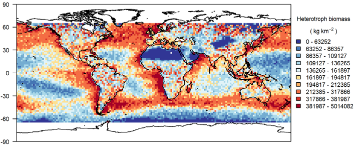
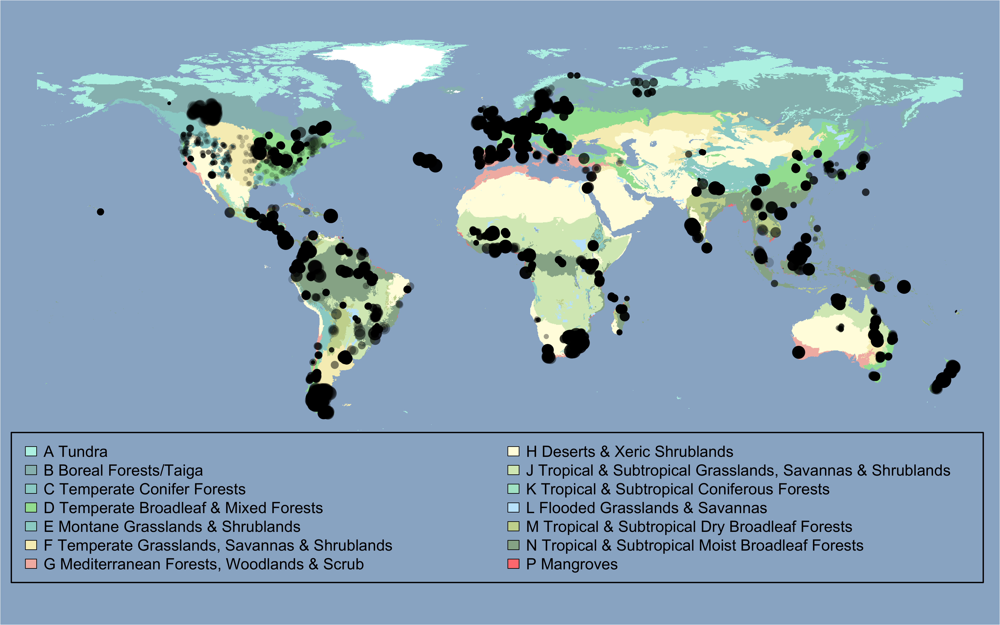
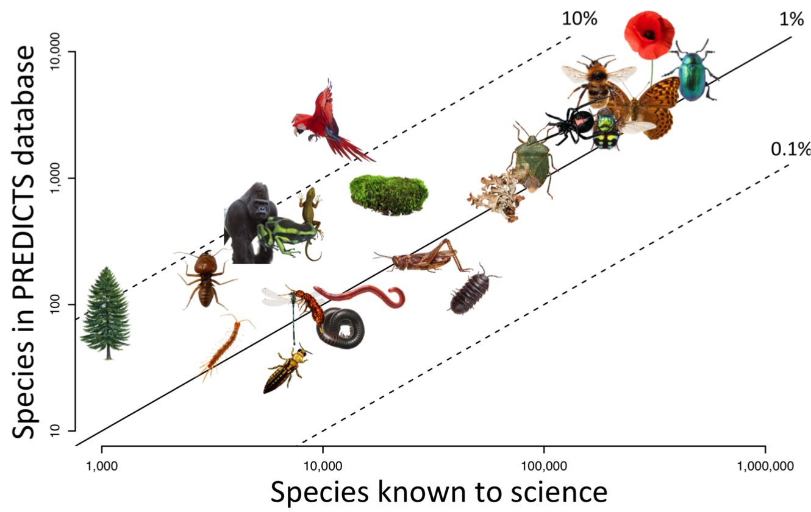

Outputs
Policy Ouputs
My research has been featured in the following policy reports and documents:
I have also contributed expert advice to the following reports:
| - The Royal Society's Living Landscapes Public Consultation |
| - The Environmental Audit Committee's Consultation on Biodiversity and Ecosystems |
| - The Parliamentary Office of Science & Technology POSTNote on Effective Biodiversity Indicators |
| - The Parliamentary Office of Science & Technology Horizon Scanning exercise on the environmental impacts of agriculture |
Software
The Madingley Model
The Madingley Model is an individual-based mechanistic models of the world's terrestrial and marine ecosystems. It represents all autotrophs (plants and phytoplankton) and all animals larger than 10 μg. The map below shows predicted spatial patterns in total animal biomass. The model can be downloaded freely here.
Data
The PREDICTS database
The database of the PREDICTS Project, which I helped to create, was publicly released for the first time in December 2016. You can download the full database from the data portal of the Natural History Museum. Below are a map of the sites with data, and a graph showing the taxonomic coverage of the database (estimated numbers of species represented in the PREDICTS database against estimated numbers of species described to science for major groups of species).
 Data/materials from papers
Many of my recent papers have been accompanied by publicly available code or datasets - either the data used in the study or outputs of the results. If you are interested in data from other papers, please contact me to discuss the possibilities.